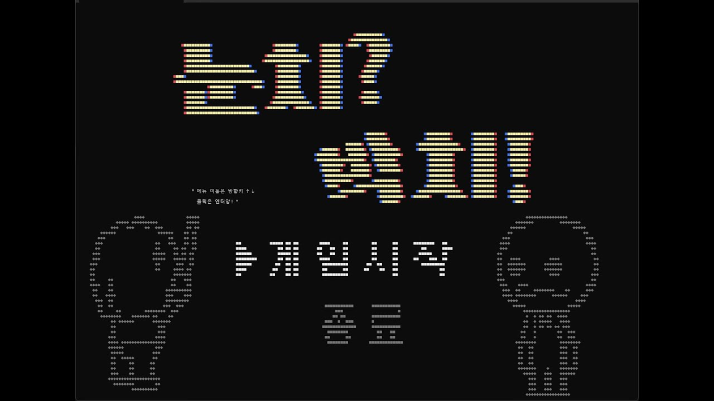

눈치박치

C++를 한 달 배운 시점에 셋이 모여 1주 만에 만든 콘솔 리듬게임입니다. 리듬 세상의 Glee Club을 모작했습니다.
언어를 익히려고 시작한 팀 프로젝트였고, 그래픽 API 없이 콘솔 출력만으로 박자와 판정을 다뤄야 했습니다. 리듬 게임을 처음 만들어본 것이 뒤에 Dead On Beat로 이어졌습니다.

C++를 한 달 배운 시점에 셋이 모여 1주 만에 만든 콘솔 리듬게임입니다. 리듬 세상의 Glee Club을 모작했습니다.
언어를 익히려고 시작한 팀 프로젝트였고, 그래픽 API 없이 콘솔 출력만으로 박자와 판정을 다뤄야 했습니다. 리듬 게임을 처음 만들어본 것이 뒤에 Dead On Beat로 이어졌습니다.